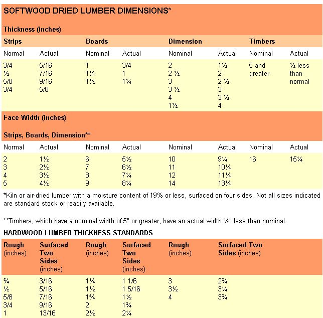

Wood sawn from trees by section and sold by dimension is known as lumber. This wood is available as softwood (cut from needle-bearing conifers like pine, fir, hemlock, cedar, redwood) and hardwood (sawn from deciduous, or leaf-bearing, trees such as oak, maple, walnut and cherry). There are two methods of mill sawing. The most common is plain, or flat, sawing, in which cuts are made tangent to (they follow) the tree's growth rings, yielding a face-grain board. Quarter-sawing, a somewhat less economical method, entails making cuts perpendicular to the growth rings, and produces straight-grained wood with better warp resistance.
All lumber is sized and priced by its rough mill-sawn dimensions, but the finished product may be reduced in size by up to one-third after the surface-planing process is complete. Hence, a nominal 2X6 measures only l½" X 5½" in actual dimension.
A piece of lumber less than 2" thick and from 2" to 16" wide in nominal dimension is a board. Boards less than 6" wide are called strips. Dimension lumber used for framing work is between 2" and 4½" thick and up to 16" wide. Timbers measure at least 5" on any surface. Normally, lumber is available in lengths between 6' and 20' in standard 2' multiples.
Lumber is sold by the board foot, each unit being equivalent to a rough board measuring 1" thick, 12" wide and 12" long-144 cubic inches of wood all told. Wood less than 1" thick is counted as a full inch, and stock over 1" is figured by the next larger ¼". Thus, an 8'-long 1 X 6 contains four board feet... as does a strip measuring 1 3/8" X 2" X 16'. To figure board feet, multiply thickness by width in inches, then multiply by length in feet and divide by 12. Often, retail dealers sell lumber by the lineal, or running, foot which is the standard practice for moldings and other factory-shaped wood. Discount houses even sell by the piece, to make shopping easier.
Wood is graded according to quality, which is determined by the size of the board and the number and significance of defects such as knots, checks and shake, pitch pockets and wane (rounded edges). Both hardwood and softwood are further graded by intended use, which takes species, structural integrity and appearance into account.
Softwood grades exist for both construction and remanufacture use. Lumber for remanufacture is supplied exclusively to industry and is divided into shop grades, industrial clears and specific product stock. Construction lumber is for consumer use and is broken down into three general categories:
Stress-graded includes typical framing members, and timbers, posts, decking and stair stringers. This "American Standard" lumber must meet the criteria of the National Grading Rule.
Nonstress-graded includes yard lumber and wood used for general building purposes, such as boards, battens, lath and planks. The boards are known as commons and are separated into five different grades depending upon the species and the lumber manufacturing association concerned. No. 1 grade has tight knots and minor blemishes and is used for paneling, shelving and finish work; No. 2 has larger knots and noticeable blemishes and is suitable for flooring and rustic paneling; No. 3 has knotholes and visible flaws and is good for sheathing and fencing; No. 4 is a low-quality board with adequate strength for subflooring and concrete forms; No. 5 is the lowest grade of board, used for crating because of its appearance and limited strength. Some species, such as Idaho (western) white pine, are graded by name (colonial, sterling, standard, utility and industrial), but because of differences in species characteristics, grade numbers and names are not always interchangeable.
Appearance lumber is nonstress-graded but is visually appealing and is suitable for working, shaping and fine finishing. Most appearance, or "select," grades are noted by letters and are separated into three categories. Grade B & Better allows only a few minor surface imperfections and is chosen for superlative finish work; C Select is the most readily available and has limited defects, which makes it suitable for quality trim and cabinetwork that use a natural finish; D has surface imperfections that can be covered with paint. A certain number of species are graded by number and description (1 and 2 clear) and others use names (prime, supreme, choice and quality).
Hardwood lumber is graded in three categories: factory, dimension parts and finished market products. Only factory grades concern us, because they're based on the proportion of a piece that can be cut into usable pieces, or cuttings, which are divided further into three project grades:
Firsts and seconds (FAS), a combination of the two best cutting grades, is limited to boards whose poorest side yields at least 83% clear wood. All first and second boards must be at least 6" wide and 8' long.
Selects, quality project wood with the good side equivalent to an FAS board, must be at least 4" wide and 6' in length.
No. 1 common, or "shorts," is the lowest grade of project hardwood. Boards must yield at least 66% clear wood on the poor side and can be no less than 3" wide and 4' long.
Note that hardwood comes in random widths, with specified minimums assigned by grade. Standard lengths range consecutively from 4' to 16'. Hardwood is sold as rough (unplaned) or as S2S (surfaced on two sides-top and bottom). Thickness is measured in ¼" graduations, from 1" to 4", and expressed as a fraction... so a 5/4 board is nominally l¼" thick.
UMBER GRADE STAMPSNearly all grade stamps, with the exception of those used for heavy timbers, include at least the following elements: 1. Certification mark: Indicates the association or agency responsible for inspection at the mill.2. Mill identification: The company name, logo or assigned mill number. 3. Grade designation: The grade name or abbreviation, sometimes indicated by number. 4. Species identification: Indicates an individual species or the species group. 5. Seasoning condition: Specifies the moisture content at surfacing; S-DRY indicates 19%, MC 15 means 15% and S-GRN is unseasoned lumber over 19%.
|
CHARLES R. PEARSON/WEST STOCK INC. |
 GIORGIO PALMISANO |
|